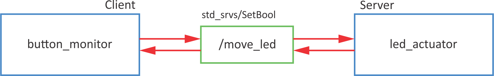
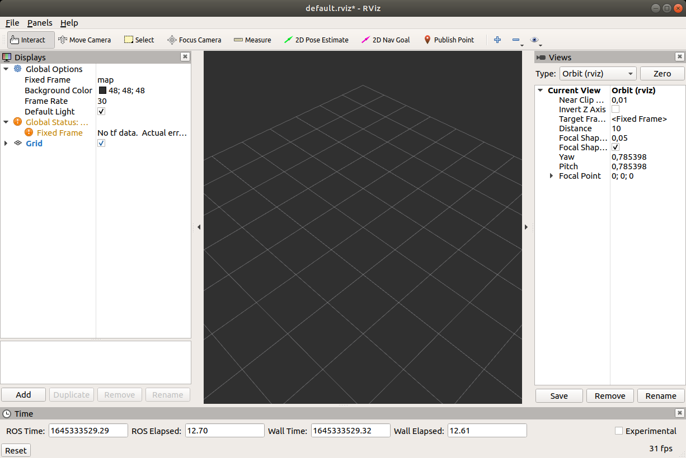

ROS setup
roscore
- takes care of communicaiton between different ROS functionalities
- it can run only one at once
- connects different ROS system into one ROS network
catkin workspace
CATKIN is an official build system for ROS
cd
mkdir catkin_ws
cd catkin_ws
mkdir src
catkin_make
Alternative is to use catkin build (beforehand you need to remove devel and build folders).
Conect console with ROS variables
cd devel
source setup.bash
To do this automatically when the console is opened, add to bashrc.sh
echo "source ~/catkin_ws/devel/setup.bash" >> ~/.bashrc
source ~/.bashrc
Packages
Packages are independent units, that can be re-used.
New package
Go to catkin_ws/src/ folder.
Basic syntax:
catkin_create_pkg <package_name> [depend1] [depend2] [depend3]
Create new package rpi_test:
cd ~/catkin_ws/src
catkin_create_pkg rpi_test rospy std_msgs
cd ..
catkin_make
Node
Nodes are processes:
- used for calculations,
- that run inside robotic application,
- grouped into packages,
- that communicate with each other (topics, servers, actions, parameter servers).
Why to use nodes:
- reduce code complexity,
- the code is more error-resistant,
- use of different programming languages.
New node
Nodes are scripts that are located inside scripts folder.
roscd rpi_test
mkdir scripts
cd scripts
Create new script
my_first_node.py:
Change the access permissions of the file to executable:
chmod +x my_first_node.py
Open script with Visual Studio Code:
The minimal working example for node:
| my_fist_node.py |
|---|
| #!/usr/bin/env python
import rospy
if __name__ == '__main__':
rospy.init_node('my_first_python_node')
rospy.loginfo('This node has been started.')
rospy.sleep(1)
print('Exit now')
|
Only one node with specific name can be run at a time. If you want to run more instances of the same node, change:
| rospy.init_node('my_first_python_node', anonymous=True)
|
To run, write
New node - class
| my_fist_node_class.py |
|---|
| #!/usr/bin/env python
import rospy
class hello_world():
def __init__(self):
# init variables
self.delay = 5
self.ctrl_c = False
rospy.on_shutdown(self.shutdownhook)
def shutdownhook(self):
# works better than the rospy.is_shutdown()
# this code is run at ctrl + c
rospy.loginfo('This node has been terminated.')
self.ctrl_c = True
def test_node(self):
rospy.loginfo('This node has been started.')
rospy.sleep(self.delay)
print('Exit now')
if __name__ == '__main__':
# initialise node
rospy.init_node('my_first_python_node')
# initialise class
first_node = hello_world()
try:
first_node.test_node()
except rospy.ROSInterruptException:
pass
|
DEBUG
rosrun <pkg name> <node name> - run specific noderosnode list - list of all active nodesrosnode info <node name> - information about hte noderosnode kill <node name> - shut down noderosnode ping <node name> - ping node (check, if it is working)
Examples for Raspberry Pi
Download examples on RaspberryPi.
Go to src directory:
Clone from GitHub:
git clone https://github.com/ROS-FE/rpi_ros_examples.git .
Build the packages:
Topics
Topic is:
- a communication channel through which nodes exchange messages
- one-way messaging (publisher> subscriber)
- anonymous
- topic has its own message type (list of standars message types)
- ROS master takes care of the proper publisher/subscriber connection
- each node can have multiple publishers/subscribers for different topics
Example
Turn on LED on button press.

Publisher
Syntax for publisher:
pub = rospy.Publisher('/topic_name', msg_type, queue_size=10)
Example code:
| button_publisher.py |
|---|
| #!/usr/bin/env python
import rospy
import RPi.GPIO as GPIO
from std_msgs.msg import Bool
# buttons GPIO pins
# button 1 - gpio 11
# button 2 - gpio 12
class rpi_button():
def __init__(self):
# init variables
self.BUTTON_GPIO = 11
# set GPIO kot BCM
GPIO.setmode(GPIO.BCM)
# set button IO as input
GPIO.setup(self.BUTTON_GPIO, GPIO.IN)
# set loop frequency to 10 Hz
self.rate = rospy.Rate(10)
# define publisher
# rospy.Publisher("topic_name", varType, queue_size)
self.pub = rospy.Publisher('/button_state', Bool, queue_size=10)
self.ctrl_c = False
rospy.on_shutdown(self.shutdownhook)
def read_button(self):
while not self.ctrl_c:
# read GPIO pin
gpio_state = GPIO.input(self.BUTTON_GPIO)
# define msg as Bool variable
self.msg = Bool()
# msg has a data "data"
self.msg.data = gpio_state
# send msg
self.publish_once()
def publish_once(self):
"""
This is because publishing in topics sometimes fails the first time you publish.
In continuous publishing systems, this is no big deal, but in systems that publish only
once, it IS very important.
"""
while not self.ctrl_c:
connections = self.pub.get_num_connections()
if connections > 0:
self.pub.publish(self.msg)
#rospy.loginfo("Msg Published")
break
else:
self.rate.sleep()
def shutdownhook(self):
# works better than the rospy.is_shutdown()
# this code is run at ctrl + c
# clear all GPIO settings
GPIO.cleanup()
self.ctrl_c = True
if __name__ == '__main__':
# initialise node
rospy.init_node('button_state_publisher', anonymous=True)
# initialise class
btn = rpi_button()
try:
btn.read_button()
except rospy.ROSInterruptException:
pass
|
To test the code run
rosrun rpi_feros button_publisher.py
check the list of topics (look for
/button_state)
Then listen to that topic
rostopic echo /button_state -c
and press the button on RaspberryPi.
Subscriber
Syntax for subscriber:
sub = rospy.Subscriber('/topic_name', msg_type, callback_fcn)
Example code:
| led_actuator.py |
|---|
| #!/usr/bin/env python
import rospy
from std_msgs.msg import Bool
import RPi.GPIO as GPIO
# GPIO za LED:
# Green 1 - GPIO 2
# Green 2 - GPIO 3
# Yellow 1 - GPIO 4
# Yellow 2 - GPIO 5
# Red 1 - GPIO 6
# Red 2 - GPIO 7
class rpi_led():
def __init__(self):
# init variables
self.LED_GPIO = 7
# set GPIO kot BCM
GPIO.setmode(GPIO.BCM)
# set all leds
for ii in range(2,8):
# set IO as outputs
GPIO.setup(ii,GPIO.OUT)
# define subscriber
# rospy.Subscriber('topic_name', varType, callback)
self.sub = rospy.Subscriber('/button_state', Bool, self.button_state_callback)
self.ctrl_c = False
rospy.on_shutdown(self.shutdownhook)
def button_state_callback(self, msg):
# the code that is executed when data is received
# turn on LED
GPIO.output(self.LED_GPIO, msg.data)
def resetLed(self):
# reset all leds
for ii in range(2,8):
# turn off all leds
GPIO.output(ii,False)
def shutdownhook(self):
# works better than the rospy.is_shutdown()
# this code is run at ctrl + c
# clear all settings
GPIO.cleanup()
self.ctrl_c = True
if __name__ == '__main__':
# initialise node
rospy.init_node('led_actuator')
# initialise class
led_act = rpi_led()
# reset leds
led_act.resetLed()
try:
# loop
rospy.spin()
except rospy.ROSInterruptException:
pass
|
To test the code run
rosrun rpi_feros led_actuator.py
After that check topics (loook for /button_state):
Use rostopic pub to turn LED on and off:
rostopic pub /button_state std_msgs/Bool "data: True"
rostopic pub /button_state std_msgs/Bool "data: False"
To test both (publisher and subscriber), run each in the invidual terminal:
rosrun rpi_feros button_publisher.py
and
rosrun rpi_feros led_actuator.py
When pressing the button on RPi, the LED should turn on.
DEBUG
rostopic -h - rostopic helprostopic list - list of all active topicsrostopic echo <topic name> - listen to selected topic-c - clear output each time-n2 - print only 2 outputsrostopic info <topic name> - information about topicrostopic pub <topic name> + Tab for autocomplete - publish data-1 - publish only once-r5- publish with 5 Hz
Exercise
Turn on LED if the object is closer than 0.2 m.

Roslaunch
Roslaunch is a tool for easily launching multiple ROS nodes as well as setting parameters. Roslaunch takes in one or more XML configuration files (with the .launch extension) that specify the parameters to set and nodes to launch, as well as the machines that they should be run on.
Basic sytax is
<launch>
<param name="/parameter_name" type="variable_type" value="variable_value"/>
<node name="name_of_the_node" pkg="name_of_the_package" type="source_file.py" ns="namespace" args="optional arguments"/>
<include file="included.launch">
<arg name="arg_name" value="arg_val" />
</include>
</launch>
New .launch
Create new package rpi_feros_bringup used for launch files:
roscd
cd ..
cd src
catkin_create_pkg rpi_feros_bringup
and do
catkin_make.
Go the new package and create folder launch
roscd rpi_feros_bringup
mkdir launch
cd launch
Inside the folder create new file feros.launch
touch rpi_led.launch
code rpi_led.launch
Copy the following lines
| rpi_led.launch |
|---|
| <?xml version="1.0"?>
<launch>
<node name="btn_pub" pkg="rpi_feros" type="button_publisher.py" output="screen"/>
<node name="led_act" pkg="rpi_feros" type="led_actuator.py" output="screen"/>
</launch>
|
To run the rpi_led.launch use roslaunch function
roslaunch rpi_feros_bringup rpi_led.launch
By running this .launch file three things are started
roscore (automatically),button_publisher.py, andled_actuator.py.
ROS network
- one ROS master in the entire network
- all nodes must use the same ROS master (
ROS_MASTER_URI)
- two-way connection between devices
- each device must present itself with a name that other devices recognize
http://wiki.ros.org/ROS/Tutorials/MultipleMachines
http://wiki.ros.org/ROS/NetworkSetup
Connection
ping the remote computer (hostname: IP or name)
Use ssh to connect to remote computer and ping your computer
ssh student@192.168.65.60
ping 192.168.65.50
ROS_MASTER_URI
ROS master is set with variable ROS_MASTER_URI. It needs to be set withing each terminal.
export ROS_MASTER_URI=http://[hostname]:11311
To check, use
Set parameter ROS_IP for IP or ROS_HOSTNAMEfor hostname if you have multiple addresses for a computer and need to force ROS to a particular one.
To do this automatically, add command to bashrc
Add
export ROS_MASTER_URI=http://[hostname]:11311
ATTENTION!
This can cause a problem, it you would like to run ROS master on the local computer.
Test connection
It is important to test connection in both ways:
- master (publisher) >>> others (subscriber)
- master (subscribers) <<< others (publisher)
Publisher:
rostopic pub /test_connection std_msgs/Bool "data: True"
Subscriber:
rostopic list
rostopic echo /test_connection
Exercise
Connect to master computer with Sick Nanoscan3 and connect to topic /sick_safetyscanners/scan.
Services
- Server/client system
- Synchronous operation
- For calculation and quick actions
- One message type for Request, another message type for Response
- A server is only one that can respond to multiple clients
Example
Turn on LED on button press using interrupts.

Server
Syntax for service server:
service = rospy.Service('/service_name', msg_type, handle_fcn)
Example code:
| led_service_server.py |
|---|
| #!/usr/bin/env python
import rospy
from std_srvs.srv import SetBool
import RPi.GPIO as GPIO
class ledServer():
def __init__(self):
# init variables
self.LED_GPIO = 2
# set GPIO kot BCM
GPIO.setmode(GPIO.BCM)
# set all leds
for ii in range(2,8):
# set IO as outputs
GPIO.setup(ii,GPIO.OUT)
# define service
# rospy.Service('service_name',varType,callback)
rospy.Service('/set_led_state', SetBool, self.set_led_status_callback)
rospy.loginfo("Service server started. Ready to get request.")
self.ctrl_c = False
rospy.on_shutdown(self.shutdownhook)
def set_led_status_callback(self, req):
# code that is executed when request is received
# set LED to req.data
GPIO.output(self.LED_GPIO, req.data)
# server response
return {'success': True, 'message':'Successfully changed LED state.'}
def resetLed(self):
# reset all leds
for ii in range(2,8):
# turn off all leds
GPIO.output(ii,False)
def shutdownhook(self):
# works better than the rospy.is_shutdown()
# this code is run at ctrl + c
# clear all settings
GPIO.cleanup()
self.ctrl_c = True
if __name__ == '__main__':
# initialise node
rospy.init_node('led_actuator')
# initialise class
led_server = ledServer()
# reset leds
led_server.resetLed()
try:
# loop
rospy.spin()
except rospy.ROSInterruptException:
pass
|
To test the code run
rosrun rpi_feros led_service_server.py
and check the list of services (look for
/set_led_state)
Use
rosservice call to test the server
rosservice call /set_led_state "data: True"
rosservice call /set_led_state "data: False"
Client
Syntax for service proxy (client):
| rospy.wait_for_service('/service_name')
try:
client = rospy.ServiceProxy('/service_name',msg_type)
...
except rospy.ServiceException as e:
rospy.logwarn('Service failed' + str(e))
|
Example:
| button_service_client.py |
|---|
| #!/usr/bin/env python
import rospy
from std_srvs.srv import SetBool
import RPi.GPIO as GPIO
class buttonClient():
def __init__(self):
# init variables
self.BUTTON_GPIO = 11
self.LED_STATE = False
# set GPIO kot BCM
GPIO.setmode(GPIO.BCM)
# set button GPIO as input
GPIO.setup(self.BUTTON_GPIO, GPIO.IN)
# set interrupt
# GPIO.add_event_detect(gpio_num, edge, callback, bouncetime)
GPIO.add_event_detect(self.BUTTON_GPIO, GPIO.RISING, callback=self.button_callback, bouncetime=500)
# define service proxy
# rospy.ServiceProxy('service_name', varType)
# wait for service
rospy.wait_for_service('/set_led_state')
# define proxy
self.set_led_state = rospy.ServiceProxy('/set_led_state', SetBool)
self.ctrl_c = False
rospy.on_shutdown(self.shutdownhook)
def button_callback(self, channel):
# code that is called from interrupt
# get the button state
power_on_led = GPIO.input(self.BUTTON_GPIO)
# change LED state
self.LED_STATE = not self.LED_STATE
try:
# send request, get response
resp = self.set_led_state(self.LED_STATE)
# print response
print(resp)
except rospy.ServiceException as e:
# in case of error
rospy.logwarn(e)
def shutdownhook(self):
# works better than the rospy.is_shutdown()
# this code is run at ctrl + c
# clear all settings
GPIO.cleanup()
self.ctrl_c = True
if __name__ == '__main__':
# initialise node
rospy.init_node('button_monitor')
# initialise class
button_client = buttonClient()
try:
# loop
rospy.spin()
except rospy.ROSInterruptException:
pass
|
To test, run both server and client in seperate terminals
rosrun rpi_feros led_service_server.py
rosrun rpi_feros button_service_client.py
With a button press, LED should turn on and off.
DEBUG
rosservice list - list of all active servicesrosservice info <service name> - information about the selected servicerosservice call <service name> - request to service server from the console
Exercise
Use buttons to shift active LED left or right.

Custom messages
Topics messages: .msg
Service messages: .srv
Service message has two parts
Request msg
---
Response msg
Use of msg primitives to define custom messages.
MSG:
- std_msgs
- sensor_msgs
- geometry_msgs
- actionlib_msgs
- ...
SRV:
MSG
We will create new topic message ledStatus composed of
int64 ledNumber
string ledStatus
Create new package
rpi_msgs
cd ~/catkin_ws/src
catkin_create_pkg rpi_msgs rospy std_msgs
and build it
Go to the package and create new folder
msg:
roscd rpi_msgs
mkdir msg
cd msg
Create new file ledStatus.msg
touch ledStatus.msg
code ledStatus.msg
and copy the following lines:
| int64 ledNumber
string ledStatus
|
Open package.xml in rpi_msgs package
and add the following lines
| package.xml |
|---|
| <build_depend>message_generation</build_depend>
<exec_depend>message_runtime</exec_depend>
|
Open CMakeLists.txt in rpi_msgs package
and add the following lines
| CMakeLists.txt |
|---|
| find_package(catkin REQUIRED COMPONENTS
rospy
std_msgs
message_generation
)
|
| CMakeLists.txt |
|---|
| # Generate messages in the 'msg' folder
add_message_files(
FILES
ledStatus.msg
)
|
| CMakeLists.txt |
|---|
| # Generate added messages and services with any dependencies listed here
generate_messages(
DEPENDENCIES
std_msgs
)
|
| CMakeLists.txt |
|---|
| catkin_package(
# INCLUDE_DIRS include
# LIBRARIES my_robot_msgs
CATKIN_DEPENDS rospy std_msgs message_runtime
# DEPENDS system_lib
)
|
After that do catkin_make
After the build is finish you can check if the message rpi_msgs/ledStatus is available
SRV
We will create new service message safetyZone.srv composed of
int16 zone
---
bool success
string message
Go to the package rpi_msgs
and create new folder
srv:
Create new file safetyZone.srv
touch safetyZone.srv
code safetyZone.srv
and copy the following lines:
| int16 zone
---
bool success
string message
|
Open CMakeLists.txt in rpi_msgs package
and add the following lines
| CMakeLists.txt |
|---|
| # Generate services in the 'srv' folder
add_service_files(
FILES
safetyZone.srv
)
|
After that do the catkin_make
After the build is finish you can check if the service message rpi_msgs/safetyZone is available
Use of custom MSG and SRV
To use custom messages, you need to do some changes of the package.html and the CMakeLists.txt of the package where you want to use them (in our case rpi_feros)
| package.html |
|---|
| <depend>rpi_msgs</depend>
|
| CMakeLists.txt |
|---|
| find_package(catkin REQUIRED COMPONENTS
rospy
std_msgs
rpi_msgs
)
|
To include new message in python code add
| from rpi_msgs.msg import ledStatus, safetyZone
|
DEBUG
Exercise
Turn on LEDs regarding to distance \(d\) from safety sensor:
- green: \(d\) > 0.4 m
- yellow: 0.4 m > \(d\) > 0.2 m
- red: \(d\) < 0.2 m

Actions
actionlib library- server/client system
- asynchronous operation
- used for longer lasting functionalities
- you can perform other tasks while basic functionality is called
- action msg is composed of individual messages for Goal, Feedback and Result
How to recognise action?
Use rostopic list and look for the following structure (as stands for action server):
as_name/cancel
as_name/feedback
as_name/goal
as_name/result
as_name/status
(
as_name is action server namespace).
Action MSG
Action msgs can be defined in package rpi_msgs. Create new folder action and inside new file runningLed.action.
roscd rpi_msgs
mkdir action
cd ./action
touch runningLed.action
code runnngLed.action
Copy the following acton msg definition:
| runningLed.action |
|---|
| # goal
int16 numberOfRuns
---
# result
int16 finalRun
---
# feedback
int16 currentRun
|
In CMakeLists.txt of the rpi_msgs package change the following lines:
| CMakeLists.txt |
|---|
| find_package(catkin REQUIRED COMPONENTS
rospy
std_msgs
message_generation
actionlib_msgs
)
|
| CMakeLists.txt |
|---|
| add_action_files(
FILES
runningLed.action
)
|
| CMakeLists.txt |
|---|
| generate_messages(
DEPENDENCIES
std_msgs
actionlib_msgs
)
|
In package.xml of the rpi_msgs package add the following line:
| package.xml |
|---|
| <build_depend>actionlib_msgs</build_depend>
|
Then do catkin_make in catkin_ws folder.
Example
Turn on sequential LEDs n-times.

Action server
Simple action server sytnax:
| sas = actionlib.SimpleActionServer('name', actionSpec, goal_callback, auto_start=False)
sas.start()
def goal_callback()
sas.publish_feedback(_feedback_)
sas.set_succeeded(_result_)
if sas.is_preempt_requested():
sas.set_preempted()
|
Example code for simple action server:
| ledrun_server.py |
|---|
| #!/usr/bin/env python
import rospy
import RPi.GPIO as GPIO
# include actionlib
import actionlib
# include action msgs
from rpi_msgs.msg import runningLedFeedback, runningLedResult, runningLedAction
class runled_server():
def __init__(self):
# init variables
# set GPIO kot BCM
GPIO.setmode(GPIO.BCM)
# set all leds
for ii in range(2,8):
# set IO as outputs
GPIO.setup(ii,GPIO.OUT)
# define simple action server
# actionlib.SimpleActionServer('action_name', actionType, callback, autostart)
self.ACserver = actionlib.SimpleActionServer('run_led', runningLedAction, self.goal_callback, False)
# run server
self.ACserver.start()
print('Server pripravljen')
# define loop frequency (6 Hz)
self.r = rospy.Rate(6)
self.ctrl_c = False
rospy.on_shutdown(self.shutdownhook)
def goal_callback(self, goal):
# Do lots of awesome groundbreaking robot stuff here
self.resetLed()
# print number of iterations
print("Stevilo iteracij: %i" % goal.numberOfRuns)
# define feedback variable
feedback1 = runningLedFeedback()
# define result variable
result1 = runningLedResult()
success = True
doPreemt = False
# do number of iterations
for kk in range(1,goal.numberOfRuns+1):
# turn on individual LED (GPIO 2 - GPIO 7)
for ii in range(2,8):
# check if there was a preemt request
if self.ACserver.is_preempt_requested():
# skip other interations
print('Goal preempted.')
# definie result
result1.finalRun = kk
# in case of preemt send result and text
self.ACserver.set_preempted(result=result1,text='Goal preemted.')
success = False
doPreemt = True
# break inside loop - turning on individual LEDs
break
###############################
# ACTIONS
# clear all LED
self.resetLed()
# turn on LED i
GPIO.output(ii,True)
# 6 Hz
self.r.sleep()
###############################
# in case of preemt, break outside loop - iterations
if doPreemt:
break
# send feedback after each interation
feedback1.currentRun = kk
self.ACserver.publish_feedback(feedback1)
# send result after all iterations
if success:
# define results
result1.finalRun = feedback1.currentRun
# log
rospy.loginfo('Zakljuceno - Succeeded')
# poslji rezultat
self.ACserver.set_succeeded(result1)
def resetLed(self):
# reset all leds
for ii in range(2,8):
# turn off all leds
GPIO.output(ii,False)
def shutdownhook(self):
# works better than the rospy.is_shutdown()
# this code is run at ctrl + c
# clear all settings
GPIO.cleanup()
self.ctrl_c = True
if __name__ == '__main__':
# initialise node
rospy.init_node('runled_server')
# initialise class
runled = runled_server()
# reset leds
runled.resetLed()
try:
# loop
rospy.spin()
except rospy.ROSInterruptException:
pass
|
Action client
Simple action client syntax:
| client = actionlib.SimpleActionClient('name', actionSpec)
client.send_goal(goal) # Sends the goal to the action server.
client.wait_for_result() # Waits for the server to finish performing the action.
client.get_result() # Prints out the result of executing the action
client.get_state() # Get current state of the server
# define action server status
PENDING = 0
ACTIVE = 1
DONE = 2
WARN = 3
ERROR = 4
|
Example code for simple action client:
| ledrun_client.py |
|---|
| #!/usr/bin/env python
import rospy
# import actionlib
import actionlib
# import action msgs
from rpi_msgs.msg import runningLedAction, runningLedGoal, runningLedResult
# define action server status
PENDING = 0
ACTIVE = 1
DONE = 2
WARN = 3
ERROR = 4
class runled_client():
def __init__(self):
# define simple action client
# actionlib.SimpleActionClient('action:name', actionType)
self.client = actionlib.SimpleActionClient('run_led', runningLedAction)
# wait, until server isnt active
self.client.wait_for_server()
rospy.loginfo("Server is active.")
self.ctrl_c = False
rospy.on_shutdown(self.shutdownhook)
def run_led_client(self, goalNum):
# define goal
goal = runningLedGoal()
goal.numberOfRuns = goalNum
# send goal
self.client.send_goal(goal)
'''
###################################
# FOR PREEMT TESTING
# after 3 s send new goal
rospy.sleep(3)
goal.numberOfRuns = 2
self.client.send_goal(goal)
print('New goal was sent.')
###################################
'''
# OPTION A - wait, until server doesn finish (similar to service)
self.client.wait_for_result()
'''
# OPTION B - do something else while you are waiting
## read current server state
current_state = self.client.get_state()
## define loop frequency 1 Hz
r2 = rospy.Rate(1)
# until server status isnt DONE, do something else
while current_state < DONE:
# action is running, so do somethin productive
# check state
current_state = self.client.get_state()
# 1 Hz
r2.sleep()
# is the server state is WARN
if current_state == WARN:
rospy.logwarn("Warning on the action server side.")
# if the server state is ERROR
if current_state == ERROR:
rospy.logerr("Error on the action server side.")
'''
# return result
return self.client.get_result()
def shutdownhook(self):
# works better than the rospy.is_shutdown()
# this code is run at ctrl + c
self.ctrl_c = True
if __name__ == '__main__':
# initialise node
rospy.init_node('run_led_client')
# initialise class
runled = runled_client()
try:
# poslji goal
result = runled.run_led_client(goalNum = 10)
# izpisi rezultat
print("Result: %i" % result.finalRun)
except rospy.ROSInterruptException:
# v primeru napake
print("Program interrupted before completion.")
|
Exercise
Stop execution of LEDs sequential blinking if the object is closer that 20 cm.
Parameters
Parameter server: globally available dictionary within ROS master
ROS parameter: one variable within the parameter server
Types:
- Boolean
- Int
- Double
- String
- Lists
- ...
Example
Code examples:
| # set parameter
rospy.set_param('/publish_frequency', 2)
# get parameter
publish_freq = rospy.get_param('/publish_frequency')
# get list of parameters
try:
rospy.get_param_names()
except ROSException:
print("Could not get param names")
|
Set parameter in a launch file:
<param name="/parameter_name" type="parameter_type" value="value"/>
| <launch>
<param name="/publish_frequency" type="int" value="2"/>
</launch>
|
<rosparam> is used if you want to load a list of parameters from a .yaml file
| <rosparam command="load" file="$(find <package_name>)/example.yaml" />
|
DEBUG
rosparam set <param name> <value> - to create new parameterrosparam get <param name> - get parameter valuerosparam list - get list of parameters
Exercise
Upgrade SimpleActionClient by setting number of runs as parameter /number_of_runs.
Upgrade SimpleActionServer by setting LED frequency as parameter /led_frequency.
Create .launch file for Action Server.
Logging
5 logging levels:

Code example
| rospy.init_node('log_demo', log_level=rospy.DEBUG)
while not rospy.is_shutdown():
rospy.logdebug("Debug msg")
rospy.loginfo("Info msg")
rospy.logwarn("Warning msg")
rospy.logerr("Error msg" )
rospy.logfatal("Fatal msg")
|
rqt_console
GUI for log messages.

rqt_plot
Graphical plot of signals from selected topics.

rqt_graph
Shows connection between nodes in the system.

RViz
RViz visually represents data from topics.
RViz is NOT a simulation, it represents the current state of the robot
